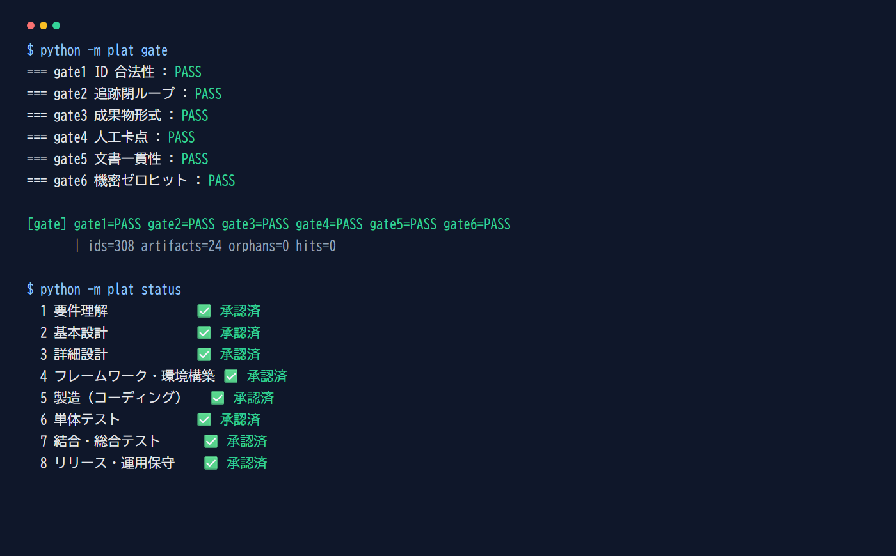
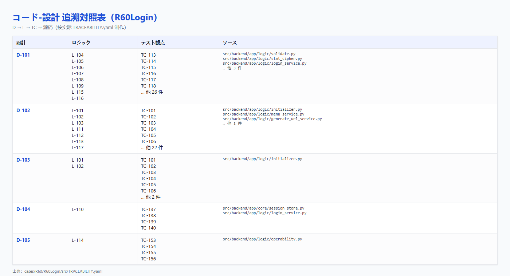
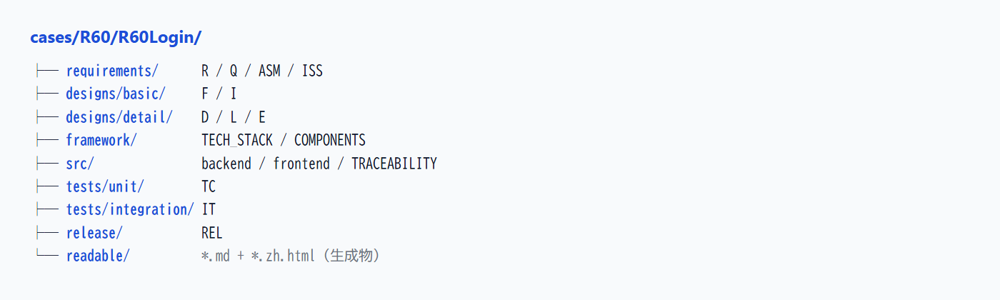
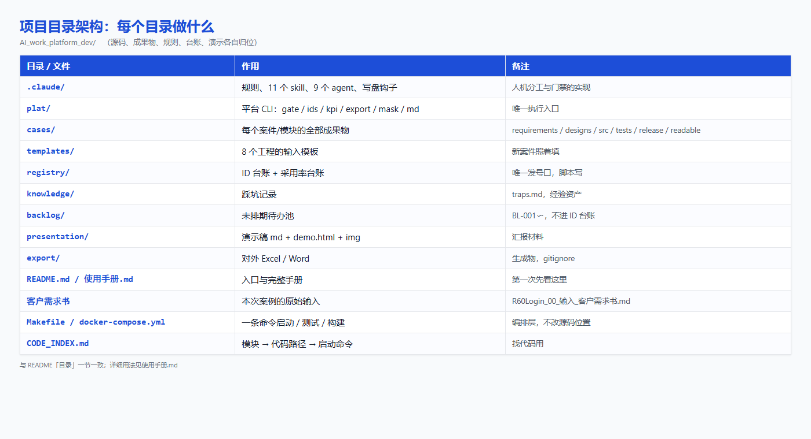
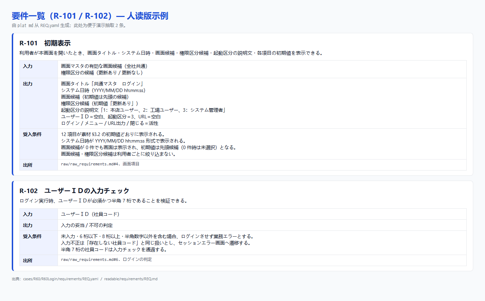
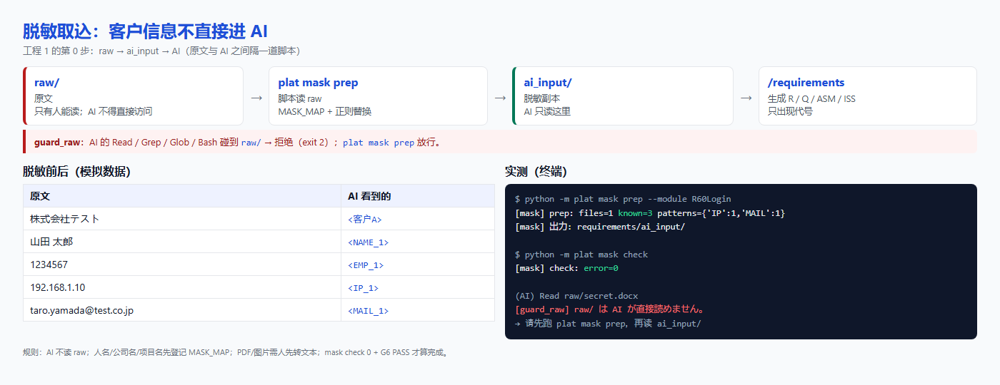
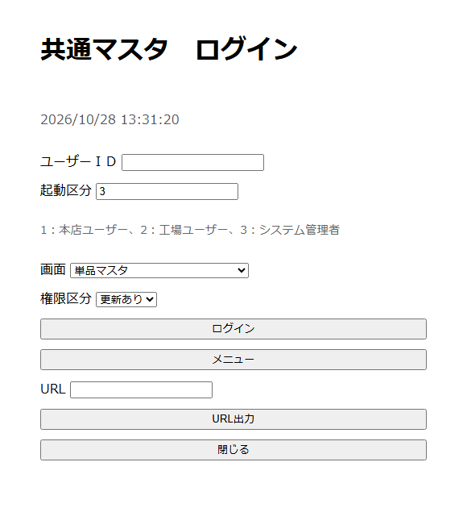
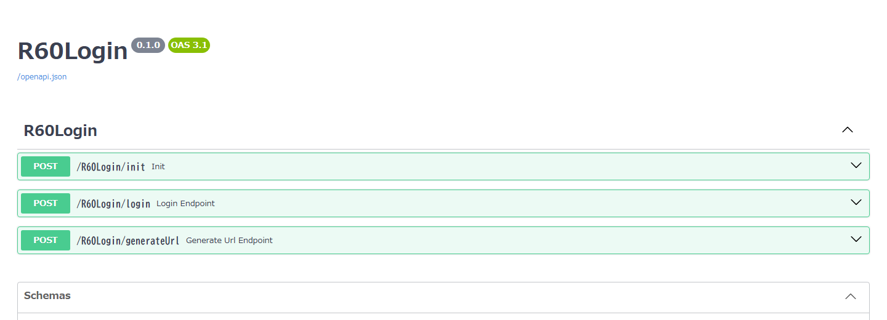
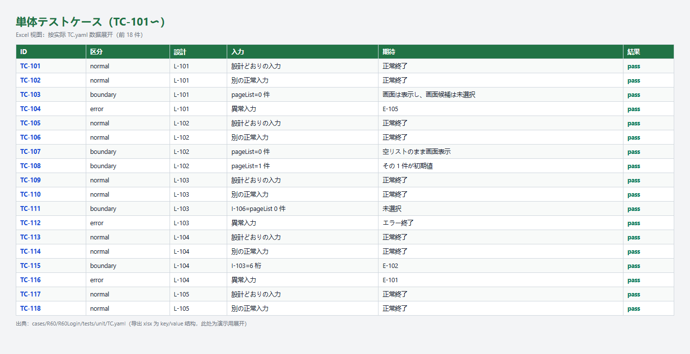

AI 执行，人拍板
8 工程闭环 · 两个模块的实跑报告 · 三章看懂怎么用
python -m plat 复现，出处见末页| 章 | 回答的问题 | 页数 |
|---|---|---|
| 第一章 | 这个平台是什么？为什么做？解决了什么问题？ | 3〜10 |
| 第二章 | 怎么用？给 AI 什么、AI 给什么、人做什么？ | 11〜23 |
| 第三章 | 还差哪些功能？接下来怎么补？ | 24〜29 |
不是一个“更会写代码的 AI”，是一台把 8 个工程串起来的流程机器。
| 断点 | 表现 | 本质 |
|---|---|---|
| 严格分层 | 要件 → 设计 → 编码 → 测试，层层交付 | 层层割裂、人工流转 |
| 人力兜底 | 质量取决于参与者的经验 | 经验依赖型 |
| 流程固化 | 重文档、重合规、效率低 | 流程合规型 |
| 思维固定 | 人主导，工具只做辅助 | 人力密集型 |
AI 执行，人拍板。这三条是代码，不是口号。
11 个 skill 全部设 disable-model-invocation。AI 不是“不建议”往下走，是“做不到”。
approved_by 由 /approve 写入，必须是人的标识符。AI 写 = 自己批自己。
G4：上游成果物没被承认，下游成果物根本不允许存在。不是“提醒”，是“拦住”。
| # | 工程 | 命令 | 主要产出 |
|---|---|---|---|
| 1 | 要件理解（含取込） | /requirements | R / Q / ASM / ISS |
| 2 | 基本设计 | /basic-design | F / I |
| 3 | 详细设计 | /detail-design | D / L / E |
| 4 | 框架・环境构筑 | /framework | TECH_STACK / COMPONENTS |
| 5 | 制造 | /coding | 源码 + TRACEABILITY |
| 6 | 单元测试 | /unit-test | TC |
| 7 | 结合・综合测试 | /integration-test | IT + 受入对照 |
| 8 | 发布・运维 | /release | REL |
| 门 | 查什么 | 失败意味着 |
|---|---|---|
| G1 | ID 合法性：野号、跳号、复用、废号引用 | 台账被绕过 |
| G2 | 追溯闭环：每条需求走得到测试 | 断链、漏测 |
| G3 | 成果物格式：必填字段、状态值、放置位置；pass 必须有 actual / evidence 证跡 | 机器读不动／空壳通过 |
| G4 | 人工卡点：上游未承认，下游不许存在 | 跳过评审 |
| G5 | 文档一致性：键名、管理文档登记、手册命令真实存在 | 文档与实现脱节 |
| G6 | 机密零命中：内部 IP、连接串、社内邮箱、密钥形态 | 泄露风险 |

R 要件 → F 功能 → I 画面项目 → D 数据 → L 逻辑 → E 错误 → TC 单测 → IT 结合 → REL 发布
308 个 ID，0 个孤立；模块按号段区分（1xx / 2xx）。

同一份内容，AI 读 YAML，工程师读 MD，内部评审看中文 HTML，客户拿 Excel。
readable/*.md：人读版（日文，由 YAML 生成）*.zh.html：中文外框视图（内部 / 汇报）
入口（README / 使用手册 / 规则）· 规则（8 工程 / ID / 状态机 / 机密）· 执行（11 skill / 9 agent / 8 模板）· 验证（6 道门 / 写盘钩子 / 采用率）

# 平台底层命令：AI / 钩子会跑，人不用记 python -m plat init --case R60 --module <模块名> --block 100 python -m plat status # 看现在到哪、下一步敲什么
draft，人不承认，不能进下一工程readable/*.md + *.zh.html/nextmake dev-login-backend / make dev-login-frontend；容器 make up（前端 8081 / 后端 8080）| 工程 | 你要给 AI | AI 给你 | 人做什么 |
|---|---|---|---|
| 1 要件理解 | 日方素材（docx/xlsx/pdf/md）或口头需求 | R / Q / ASM / ISS + 带出处的取込 | 确认粒度、Q 是否该问、ISS 是否阻塞 |
| 2 基本设计 | 已承认的 REQ.yaml（含 QST/ASM/ISS） | F / I，每个都挂到 R | 确认 F 的切分、I 有没有多 |
| 3 详细设计 | F / I | D / L / E + 边界值 | 确认排他、异常网罗、消息文面 |
| 4 框架 | D / L | TECH_STACK / COMPONENTS | 拍板技术栈（承认后不得擅改） |
| 5 制造 | D / L / E + 技术栈 | 源码 + 设计-代码对照表 | 看 extra / unimplemented |
| 6 单元测试 | L / E / 源码 | TC + 执行结果 | 看观点是否够、NG 责任层 |
| 7 结合测试 | TC / 基本设计 / 受入条件 | IT + R↔IT 对照 | 看主线场景、未覆盖理由 |
| 8 发布 | IT / R | Release Note / 手顺 / 切戻し / Runbook | 发布判定（AI 不判定） |
readable/<同路径>.md（日文）与 <同名>.zh.html（中文外框）。/requirements 输入：日方素材或口头需求
REQ.yaml / QST.yaml / ASM.yaml / ISS.yaml + raw/raw_requirements.md（本例 R 10 / Q 12 / ASM 8 / ISS 3）

/approve requirements客户信息不直接进 AI：raw/ 只有人能读，AI 只读 ai_input/。

mask check 0 + G6 PASS。/basic-design 输入：已承认的 REQ.yaml
| AI 给你 | 内容 | 本例 |
|---|---|---|
designs/basic/FNC.yaml | 功能 F | F-101〜F-114（14） |
designs/basic/SCR.yaml | 画面项目 I | I-101〜I-112（12） |

/approve basic-design/detail-design 输入：已承认的 F / I
| AI 给你 | 内容 | 本例 |
|---|---|---|
designs/detail/DSN.yaml | 数据模型 D | D-101〜D-105（5） |
designs/detail/LGC.yaml | 业务逻辑 L（输入/分支/输出/异常/边界值） | L-101〜L-117（17） |
designs/detail/ERR.yaml | 错误与消息 E | E-101〜E-111（11） |

/approve detail-design/framework 输入：D / L
| AI 给你 | 内容 |
|---|---|
framework/TECH_STACK.yaml | 后端/前端/DB/测试/构建/运行命令 |
framework/COMPONENTS.yaml | 共通部品（响应包装、加解密、Session、错误分类等） |
/approve framework/coding 输入：D / L / E + TECH_STACK / COMPONENTS
src/backend/app/（api / core / logic / repository）src/frontend/src/（api / stores / views）src/TRACEABILITY.yaml（D → L → TC → 源码）traces = 每个 D 对应哪些 L、哪些源码；unimplemented = 设计有、代码没有；extra = 代码有、设计没有。/approve coding/unit-test 输入：LGC（分支与边界值）/ ERR（异常）/ 源码
TC 68 件（正常 / 边界 / 异常），result 全填，actual 标【模拟】（证跡不是实测）；NG 登记 BUG。

/approve unit-test/integration-test 输入：TC / 基本设计 / 受入条件
| AI 给你 | 内容 | 本例 |
|---|---|---|
tests/integration/IT.yaml | 业务场景 IT | IT-101〜IT-111（11） |
acceptance_map | R ↔ IT 对照 | 10 条 R 全部覆盖 |
not_covered_reason，禁止静默遗漏/approve integration-test/release 输入：IT / R
| 内容 | 说明 |
|---|---|
| Release Note | 从 R / F / L 的 ID 自动集约，不手写 |
| 手顺书 | 前提・确认点・スモーク基准（实值用占位） |
| 切戻し | 可执行的步骤 + 目标时间 + 是否演练过 |
| Runbook | 看什么指标、阈值（值由运用决定）、升级路径 |
| 判定条件现状 | 逐条写 met / unmet，不写“可以发布” |
/approve release人不需要记 8 套工具，只需要记 5 个动作。
| 动作 | 命令 | 作用 |
|---|---|---|
| 承认 | /approve <阶段> | 把 draft 改成 confirmed，写入 approved_by / approved_at |
| 问路 | /next | 看现在到哪、下一步敲什么、有没有阻塞 |
| 检查 | 写文件后钩子自动跑；阶段结束看 python -m plat gate | 钩子只提示当前文件的 ERROR；全量确认在阶段结束/提交前；FAIL 就停下来查原因 |
| 变更 | /change <ID> + plat impact | 算下游影响面；退回哪个工程由人决定 |
| 独立复核 | gate-reviewer agent | 干净上下文重跑门禁，不信任产出方的说法 |
approved_by ③ 不要绕过 plat gate 提交。11 个 skill（人敲）
/requirements /basic-design /detail-design /framework
/coding /unit-test /integration-test /release
/approve /change /next
9 个 agent（执行体）
| agent | 什么时候用 |
|---|---|
stage1〜stage8 | 想把产出过程隔离在主会话外 |
gate-reviewer | 承认之前独立验证 |
R60Login 完整走查（实际跑过）
| 阶段 | 产出 | 数量 |
|---|---|---|
| 1 要件 | R / Q / ASM / ISS | 10 / 12 / 8 / 3 |
| 2 基本设计 | F / I | 14 / 12 |
| 3 详细设计 | D / L / E | 5 / 17 / 11 |
| 4 框架 | TECH_STACK / COMPONENTS | 2 份 |
| 5 制造 | 源码 + TRACEABILITY | 1 套 |
| 6 单元测试 | TC | 68 |
| 7 结合测试 | IT | 11 |
| 8 发布 | REL | 1 |
| 合计 | ID | 172 |
readable/*.md 与 *.zh.html；写盘钩子负责兜底。make dev-login-backend / make dev-login-frontend；容器 make up（前端 8081 / 后端 8080）。主线已经能跑，缺的是“平台基础设施”。
8 工程全链路、人机卡点、ID 台账与追溯、6 道门、平台自测 9 件（pytest）、成果物三态（YAML/MD/HTML）、Excel/Word 导出、脱敏、变更影响、采用率、覆盖率 KPI、9 个 agent、8 个模板、两套完整案例、R60Login 可运行的前后端（FastAPI + Vue）+ Makefile / Docker Compose
Context Hub（只有 ID 台账）、知识层（只有 traps/cases）、治理审计（只有 git + 承认栏）、利用层（CLI + 聊天 + 本地/容器运行；无 Web 平台画面、无 CI/CD）、RACI、成本/工数、测试执行结果、OpenAPI/DDL/脚手架、静态解析
模型网关、RAG/向量库、Web 平台画面、CI/CD 集成、SSO/角色权限、审计日志、成本管理、闭域/GPU/认证基盘、专用 IDE 插件、Jira/Redmine 集成
| 平台层 | PPT 要求 | 现状 | 缺口 |
|---|---|---|---|
| 利用层 | IDE 插件 / 聊天 / Web / CLI / CI-CD | CLI + 聊天 + 容器化前端 | 无 Web 平台画面、无 CI/CD、无专用插件 |
| 编成层 | 工程别 Agent / 工作流 / Prompt 管理 | 9 agent + 11 skill + 8 模板 | 工作流靠人敲命令；无 Prompt 版本管理 |
| 能力层 | 模型网关 / 代码·文档·测试生成 / RAG / 静态解析 | 生成由 AI 在会话内完成 | 无模型网关、无 RAG、无静态解析集成 |
| 知识层 | 过去案件 / 规范 / 术语词典 / 既存源码 / 设计模式 | traps + cases + rules | 无术语词典、无既存源码索引、无 patterns |
| 数据·上下文层 | Git / 要件 ID / 追溯 DB / 向量 DB | Git + ID 台账 + related_ids | 无 DB、无向量 DB、无 Context Hub 服务 |
| 统制·治理层 | 权限 / 审计 / 脱敏 / 质量评价 / 成本 | 脱敏 + 6 门 + 采用率 | 无 SSO、无审计日志、无成本管理 |
| 基盘层 | 云/本地 / GPU / 闭域 / 认证基盘 | 本地工作站 + Docker Compose | 无 GPU / 闭域 / 认证基盘 |
不一次全铺开，先做“投入小、立刻见效”的。
| 优先级 | 数量 | 做什么 |
|---|---|---|
| P0 | 6 | 检索、CI gate、审计日志、术语词典、静态解析、测试执行 |
| P1 | 10 | OpenAPI/DDL、脚手架、模型网关、SSO、Context Hub、成本、IF/NFR、RACI、工数基线、RAG 向量库 |
| P2 | 6 | Web 画面、IDE 插件、Jira/Redmine/Excel、闭域部署、多案件 KPI、Excel 回写 |
plat search（M）、BL-002 CI gate（S）、BL-003 审计日志（M）、BL-004 术语词典 + patterns（S）、BL-005 静态解析（M）、BL-006 测试执行与覆盖率（L）。BL-xxx 只是候选；人确认后走 plat ids alloc --type CR 升格为 CR。| 阶段 | 做什么 | 验收标准 |
|---|---|---|
| Phase 1（现在） | 搭平台，选 1 个案件 1 个模块跑通 8 工程，并做到可本地/容器启动 | 6 道门常绿 + 一条需求追到测试 + 24/24 覆盖 + 后端可启动 / 前端可构建 |
| Phase 2（3〜6 个月） | 补 P0/P1：RAG、CI、审计、SSO、模型网关、OpenAPI/DDL | 新模块能独立走完，不需平台方陪同 |
| Phase 3（6〜12 个月） | 补 P2：Web、IDE 插件、闭域、多案件 KPI | 多案件并行，知识沉淀复用 |
没跑就说没跑，没做就说没做。
| # | 没做到的事 | 现状 |
|---|---|---|
| 1 | 结合测试真实执行 | R60Login 10 个场景为【模拟】pass，IT-111（非功能）not_run；无浏览器/Oracle 实机 |
| 2 | 单测真实执行 | R60Login 68 件结果标【模拟】pass；源码已有，但未在 CI 里真跑 |
| 3 | 日方真实回答 | Q-101〜Q-112、ISS-101〜103 全是【模拟】；暗号方式、Session 有效期、mngInfo 也是模拟 |
| 4 | 顾客确认 | Q-111 / ISS-101 / ISS-102 的实顾客确认未做 |
| 5 | 采用率样本 | R60Login 43.9%（含模拟回答导致的修正，不是人的修正率）；R60Maker 93.1% |
| 6 | 人月削减率 | 没有实测数据，本稿不放百分比 |
| 7 | 知识库检索（RAG） | 只留目录与空命令，未实现 |
| 8 | 平台基础设施 | 模型网关、CI、SSO、审计、成本、闭域均未做（见第三章） |
| 9 | 素材取込の未対応形式 | PDF / 扫描件 / 图片未対応：mask prep 列入 unsupported，需人工文本化后再脱敏 |
先补 6 个 P0，再谈全社展开。
阶段命令是人敲的，活是 AI 干的，
检查是钩子自动跑的，责任是人担的。
| 数字 / 事实 | 命令 |
|---|---|
| 308 个 ID / 24 成果物 / 6 道门 | python -m plat gate |
| 8 工程进度 | python -m plat status |
| KPI 六维 / 采用率 | python -m plat kpi ・ python -m plat adopt --module <模块> |
| 24 份对外 Excel | python -m plat export --case R60 --module <模块> |
| 人读 MD / 中文 HTML | python -m plat md --module <模块> --html |
| 本地启动 / 容器启动 | make dev-login-backend / make dev-login-frontend / make up |
| 前端构建 | make build |
| 变更影响面 | python -m plat impact <ID> |
| 机密检查 0 件 | python -m plat mask check |
| 11 条踩坑 | knowledge/traps.md |
| 待办池 | backlog/backlog.yaml |